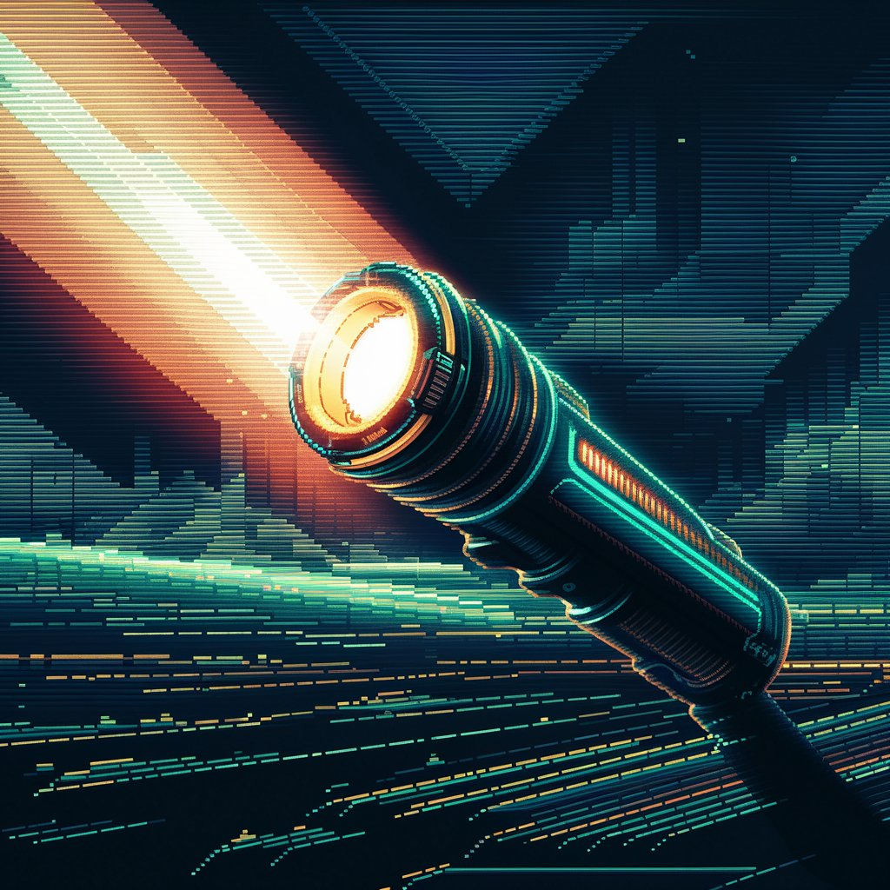
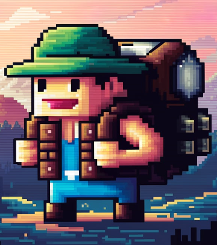

Warum ist der Xorret de Catí in Alicante ein gutes Ökosystem für Skorpione?
Xorret de Catí ist ein Naturgebiet in Petrer, Alicante, das sich durch seine beeindruckende Schönheit und seinen ökologischen Wert auszeichnet. Eingebettet in die geschützte Landschaft der Sierras de Maigmó und El Cid, ist dieses Berggebiet umgeben von den majestätischen Gipfeln der Sierras del Maigmó und del Fraile, die über 1.200 Meter hoch sind und spektakuläre Felsklippen und -grate bieten.
Das Erholungsgebiet Xorret de Catí liegt in einer privilegierten Umgebung, umgeben von der Sierra del Maigmó, den Rasos de Cati, der Crestera de Fraile und der Sierra del Cid. Die vorherrschende Vegetation umfasst Pinienwälder und eine Vielzahl von aromatischen Pflanzen wie Thymian, Rosmarin, Pebrella und Katzenschwanz.
Wenn du ein Naturfreund bist und dich für nachtaktive Kreaturen begeisterst, wird es dich sicherlich interessieren, warum der Xorret de Catí in der Provinz Alicante ein idealer Ort für Skorpione ist. Dieser magische Ort bietet nicht nur beeindruckende Landschaften, sondern ist auch ein perfektes Zuhause für diese faszinierenden Spinnentiere.
Lasst uns herausfinden, warum!

Günstige Klimatische Bedingungen
Mittelmeerklima
Der Xorret de Catí liegt in einer Region mit Mittelmeerklima, was heiße und trockene Sommer sowie milde Winter bedeutet. Skorpione, wie der *Buthus occitanus*, lieben dieses warme und trockene Klima. Dies ist einer der Hauptgründe, warum sie in diesem Gebiet gedeihen.
Niedrige Luftfeuchtigkeit
Zudem ist die niedrige Luftfeuchtigkeit ideal für Skorpione. Sie bevorzugen trockene Umgebungen, da dies ihnen hilft, Austrocknungsprobleme zu vermeiden und das Risiko von Pilzinfektionen zu reduzieren.

Habitatstruktur
Felsen und Risse
Der Xorret de Catí ist voller Felsen, Risse und Spalten, die ideale natürliche Verstecke für Skorpione darstellen. Diese Verstecke bieten ihnen Schutz während des Tages, wenn sie am anfälligsten für Raubtiere und extreme Wetterbedingungen sind.
Sandige und Steinige Böden
Die Böden des Gebiets sind perfekt für Skorpione. Sandige Böden erleichtern es den Skorpionen, zu graben und sich zu bewegen, und die steinigen Bereiche bieten zahlreiche Versteckmöglichkeiten.

Verfügbarkeit von Beute
Reichtum an Insekten
Der Pflanzenreichtum im Xorret de Catí zieht viele Insekten an, die die Hauptnahrungsquelle für Skorpione darstellen. Ein ständiger Überfluss an Beute stellt sicher, dass die Skorpione immer etwas zu fressen haben.
Biodiversität
Das mediterrane Ökosystem des Xorret de Catí ist sehr vielfältig, was ein ausgewogenes Umfeld schafft, in dem die Skorpione zusammen mit anderen Arten gedeihen können.

Schutz und Zuflucht
Lokale Mikroklimata
Die geografischen Merkmale des Xorret de Catí schaffen Mikroklimata, die während der Hitze des Tages kühlere Rückzugsorte bieten können, was für Skorpione von Vorteil ist.
Dichte Vegetation
Die Vegetation im Gebiet bietet zusätzlichen Schutz und hilft, die Bodenfeuchtigkeit an bestimmten Stellen zu erhalten, was Mikrohabitate schafft, in denen die Skorpione Wasser und Schatten finden können.
_ Route _

Distanz: 1.2km
Geschätzte Dauer: 60 min
Empfohlene Zeit: ab 22:30 Uhr
Beste Jahreszeit: Juli, August
Schwierigkeitsgrad: niedrig
Steigung: 1%

Beschreibung der Route
Breite und sichere Wege: Perfekt für die Ängstlichen. Wenn dich die Angst vor Gefahren vom Erkunden abhält, bieten unsere Wege ein magisches Erlebnis ohne Überraschungen und Aufregung.
Erlebe das Abenteuer ohne Drama!
ANFAHRT
Tipps für die Alacran-Route im Xorret de Catí.

Bekleidung
Geeignetes Schuhwerk
ist entscheidend, um die Erfahrung sicher und komfortabel zu genießen. Wanderschuhe oder Sportschuhe mit guter Traktion werden empfohlen, um ein Ausrutschen zu vermeiden und einen guten Halt auf unebenem Gelände zu gewährleisten.
Dauer: Dieser Tipp gilt für die gesamte Route.

Zubehör
Taschenlampe
Eine Taschenlampe ist nützlich, um sich durch die Gegend zu bewegen; jedoch wird nicht empfohlen, sie während der Beobachtung der Skorpione zu verwenden, damit die Erfahrung authentischer und magischer unter dem Nachthimmel ist.
Dauer: Unverzichtbar auf unmarkierten Wegen.

Zubehör
Schwarzlichtlampe
Eine Schwarzlichtlampe ist unverzichtbar, um Skorpione zu beobachten, da diese Tiere unter UV-Licht leuchten. Stellen Sie sicher, dass Sie eine solche Lampe mitnehmen, um die Skorpione in ihrer ganzen Pracht zu sehen.
Dauer: Besonders nützlich während der nächtlichen Teile der Route.

Bewusstsein
Vermeiden Sie die Störung des Lebensraums
Es ist wichtig, den natürlichen Lebensraum der Skorpione zu respektieren. Berühren oder bewegen Sie keine Steine oder Baumstämme und halten Sie einen angemessenen Abstand. Denken Sie daran, dass wir als Gäste in ihrem Zuhause sind und unseren Einfluss minimieren müssen.
Dauer: Zu jeder Zeit.
¿ Skorpione?
Wir werden ihre Merkmale, ihr Verhalten und Sicherheitsmaßnahmen erkunden, um mit diesen faszinierenden, aber manchmal gefährlichen Spinnentieren zusammenzuleben.

Beschreibung:
Größe: Erwachsene können zwischen 6 und 8 cm lang werden.
Farbe: Ihre Farbe variiert von blassem Gelb bis hellbraun, was ihnen hilft, sich gut in ihrer Umgebung zu tarnen.
Unterscheidungsmerkmale: Sie haben ein Paar Vorderzangen, einen segmentierten Körper und einen Schwanz mit einem giftigen Stachel am Ende.

Verhalten:
Nocturnal: Sie sind nachts aktiver, was ihre Beobachtung bei Nachtführungen ideal macht.
Ernährung: Sie ernähren sich hauptsächlich von Insekten und Spinnen. Sie benutzen ihre Zangen, um ihre Beute zu fangen und ihren Stachel, um Gift zu injizieren.
Fortpflanzung: Die Weibchen tragen die Eier in ihrem Körper und gebären lebende Jungtiere, die sich bis zur ersten Häutung auf dem Rücken der Mutter aufhalten.

Gift:
Toxizität: Das Gift des Buthus occitanus ist mäßig giftig für Menschen und verursacht Schmerzen, Schwellungen und in seltenen Fällen schwerere Symptome. Stiche sind in der Regel nicht tödlich, erfordern aber medizinische Aufmerksamkeit, insbesondere bei Kindern und Allergikern.

Schutz:
Erhaltungszustand: Sie gelten nicht als vom Aussterben bedroht, spielen jedoch wie alle Spinnentiere eine wichtige Rolle im Ökosystem, indem sie die Insektenpopulation kontrollieren.
Unterschiede zwischen männlichen und weiblichen Skorpionen.

Körpergröße
Männchen: Bei vielen Skorpionarten sind die Männchen schlanker und länglicher als die Weibchen.
Weibchen: Die Weibchen haben in der Regel einen breiteren und robusteren Körper.

Kämme (Pectines)
Männchen: Die Männchen haben größere Kämme (sensorische Organe in Form eines Kamms auf der Unterseite des Körpers) mit mehr Zähnen (kleine Borsten). Diese Kämme werden verwendet, um Pheromone und Vibrationen im Boden zu erkennen.
Weibchen: Die Weibchen haben kleinere Kämme mit weniger Zähnen im Vergleich zu den Männchen.

Schwanz (Metasoma)
Männchen: Der Schwanz des Männchens (das Metasoma) ist tendenziell länger und dünner. Bei einigen Arten ist das fünfte Segment des Schwanzes bei den Männchen länger.
Weibchen: Der Schwanz des Weibchens ist normalerweise kürzer und robuster.

Palpen (Zangen)
Männchen: Bei bestimmten Arten haben die Männchen längere und dünnere Zangen, die ihnen während des Balzverhaltens und im Kampf mit anderen Männchen helfen.
Weibchen: Die Weibchen haben in der Regel kürzere und stärkere Zangen.

Balzverhalten
Männchen: Die Männchen führen ein komplexes Balzritual durch, das das Ergreifen der Zangen des Weibchens und einen „Tanz“ beinhaltet, bei dem sie das Weibchen hin und her bewegen.
Weibchen: Die Weibchen nehmen an diesem Balzritual teil, initiieren es jedoch nicht.
Interessante Fakten über Skorpione.

Uralte Überlebende
Skorpione gehören zu den ältesten Tieren der Erde. Es wird angenommen, dass sie seit mehr als 400 Millionen Jahren existieren, was bedeutet, dass sie Massensterben überlebt haben und sich seit ihren prähistorischen Ursprüngen kaum verändert haben.

Extreme Widerstandsfähigkeit
Skorpione sind unglaublich widerstandsfähig gegenüber extremen Bedingungen. Sie können monatelang ohne Nahrung überleben und extremen Temperaturen standhalten, die von der Kälte der Wüste bis zur sengenden Hitze reichen.

Nachtjäger
Sie sind hauptsächlich nachtaktiv, was bedeutet, dass sie nachts jagen und aktiver sind. Diese Anpassung hilft ihnen, die extreme Hitze des Tages zu vermeiden und die Kühle der Nacht zu nutzen, um Insekten und andere kleine Beutetiere zu jagen.

Gift mit Zweck
Das Gift der Skorpione dient nicht nur zur Verteidigung und Jagd, sondern hat auch medizinische Eigenschaften. Wissenschaftler untersuchen Bestandteile des Skorpiongiftes, um Behandlungen für Krankheiten wie Krebs zu entwickeln und wirksamere Schmerzmittel zu schaffen.

Langlebigkeit in der Welt der Spinnentiere
Im Vergleich zu anderen Spinnentieren haben Skorpione eine relativ lange Lebensdauer. Einige Arten können zwischen 4 und 25 Jahren leben, abhängig von den Umweltbedingungen und ihrem Lebensraum.

Schützende Elternschaft
Nach der Geburt lebender Jungtiere trägt die Mutter ihre Jungen auf ihrem Rücken, bis sie ihre erste Häutung hinter sich haben. In dieser Zeit sind die Jungen verletzlich und vollständig auf den mütterlichen Schutz angewiesen.

Anpassung an Dehydration
Skorpione haben die Fähigkeit, ihre Stoffwechselrate zu senken und den Wasserverlust zu begrenzen, was ihnen ermöglicht, in trockenen und wüstenartigen Umgebungen zu überleben, in denen andere Tiere nicht überleben könnten.
Nach all den Details, die ich mit Ihnen über die faszinierende Route zur Beobachtung von Skorpionen im Xorret de Catí geteilt habe, ist es nun Zeit, sich zu verabschieden. Es war mir eine Freude, Sie auf dieser Reise voller Geheimnisse und nächtlicher Entdeckungen zu begleiten. Die Erfahrung, diese unglaublichen Wesen in ihrem natürlichen Lebensraum zu sehen, ist etwas, das man nicht so leicht vergisst.
Ich möchte Sie einladen, nicht nur beim Lesen zu bleiben. Gehen Sie raus und erleben Sie das Abenteuer! Die Natur hat immer etwas Neues zu bieten, und der Xorret de Catí ist der perfekte Ort, um auf einzigartige Weise mit ihr in Kontakt zu treten. Packen Sie Ihren Rucksack, bereiten Sie Ihre UV-Taschenlampe vor und kommen Sie, um die geheime Welt der Skorpione zu entdecken. Ich versichere Ihnen, es wird eine unvergessliche Erfahrung.
¡ Wir sehen uns auf dem Weg !